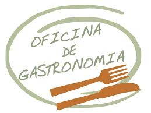
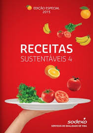
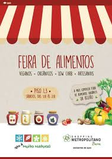

Meus projetos

Receitas Sustentáveis
Desenvolvimento de um projeto de receitas que utilizam ingredientes locais e sazonais, promovendo a sustentabilidade e o desperdício zero.

Oficinas Gastronômicas Artificial
.Oficinas Gastronômicas: Organização de oficinas para ensinar técnicas culinárias específicas, como fermentação, pães artesanais ou culinária vegana.

Feira de Alimentos Artesanais
Feira de Alimentos Artesanais: Participação em feiras para vender produtos caseiros, como conservas, pães ou doces, promovendo a gastronomia artesanal.